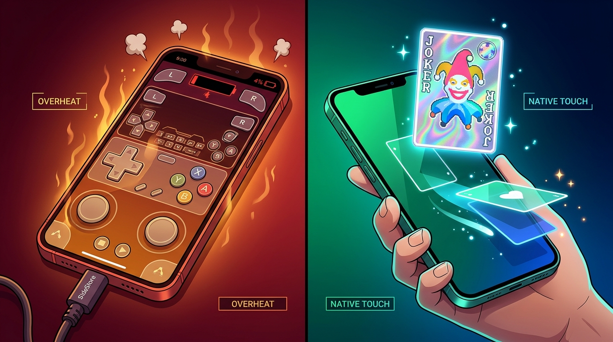

Quick builder takes from X, Reddit, and RedNote (EN / 中文), long-form product retrospectives, and daily source-linked AI field notes.
Quick Take · X & RedNote (小红书)

On running reverse-engineered console games on iOS
Spent part of the weekend sideloading a few reverse-engineered console ports onto my iPhone. As a benchmark for testing AI Agent reverse-engineering and porting capabilities, it’s an interesting direction—but as something you’d actually want to play on a phone, not really.
These ports aren’t optimized for iOS: shaky performance, brutal battery drain, awkward touch controls, and just keeping SideStore mounted in the background eats extra battery on its own. Meanwhile, native iOS games like Balatro are already ridiculously good time-sinks built for touch. The real high-leverage direction is iterating faster on games designed natively for mobile.
I’ve been vibe coding since the early Cursor days, and lately it just felt exhausting—until I switched back to Opus 5.5 and got that endless flow-state spark back.
Looking back, the burnout came from staying on GPT too long. Between Astra and Sol 6.1, every session felt like fighting a wall of defensive slop. Worse, daily quota resets created daily grind FOMO: you feel bad not burning the quota, so you keep pedaling, the slop mountain grows, and eventually you can’t ship a tiny feature without stripping through five layers of defensive armor first. Life is too short to fight your model.
Opus 5.5 治好了我的 Vibe Coding 电子 ED
从 Cursor 时代一路 Vibe Coding 到现在，前阵子越来越有种疲惫感，直到切回 Opus 5.5，才重新找回那种查克拉源源不断涌上来的感觉。
仔细复盘，电子 ED 的根源还是 GPT 用久了。不管是 Astra 还是 Sol 6.1，每天都在和满屏的“防御性💩”搏斗。偏偏上个月每天 Reset，不蹬觉得亏，蹬得越多💩山越高，到最后随便想加个小功能，不先“破甲”都写不进去。珍爱生命，要用就用最好的 Model——现在还没退订 CloseAI，纯粹是留口气看一眼 Astra 6.2。
Security Take · Reddit (r/GrokBot & r/selfhosted) & X
Why I don’t put primary logins or payment cards into a cloud bot vault
Two practical details worth checking before putting primary logins or cards into a cloud bot vault: vault entries and browser state on the bot VM are shared account-wide across your bots rather than isolated per workflow, and saved payment cards can auto-fill at checkout without a separate per-purchase approval prompt. Importing existing logins also goes through a plaintext CSV export on disk.
That gap is why I built Agent Autofill on macOS: AES-GCM SQLite backed by macOS Keychain, local Chrome address & password reconciliation without CSV files, and a one-time origin-bound Chrome extension handle (credential.use) so passwords stay out of LLM context while form submission always pauses for an explicit human gate.
Small context beats broad repo archaeology (Paired eval: 9.1/10 vs 7.0/10)
Does a fresh AI coding agent actually solve repository tasks better with a lightweight context harness? Not vibes—paired evaluations on the exact same repo and task, with vs. without the harness across 32 local repositories.
After replacing giant “Rules / Never / Always” prompt walls with four compact files (AGENTS.md, CONTEXT.md, NOW.md, PLAN.md) and progressive card hydration, fresh-agent task scores jumped from 7.0/10 to 9.1/10 (8/10 pairs improved, 2 ties, 0 regressions). The biggest gain was cold resume and knowing which stale docs to ignore.
Builder Story · Reddit (r/selfhosted) & RedNote (小红书)
Why I built a local MyChart exporter while caring for a NICU baby
While our family was caring for a medically complex NICU baby, notes and lab results changed every day. The hard part wasn’t reading a single result—it was making sure the next question we asked used the latest chart without uploading sensitive records to a third-party cloud service.
Foliofen CLI (mychart-cli) strictly separates record acquisition from medical interpretation: it drives a dedicated local Chrome profile to export deterministic Markdown and JSONL with POSIX 0600 permissions, zero cloud backend, and an offline synthetic demo (npx @lifan-builds/mychart-cli demo).
我为什么在照顾 NICU 宝宝时写了一个 MyChart 本地工具
家里在照顾一个情况复杂的 NICU 宝宝时，我每天都要跟上新的病历记录和检查结果。难点不只是看懂某一条结果，而是保证下一次查看和提问时用到的资料是最新的，同时绝不把敏感病历上传给第三方云服务。
Why I built a local personal vault for AI agents on my Mac
Browser and coding agents keep hitting the same friction: retyping home vs. work addresses, pasting secrets into prompts, or getting stuck on 2FA codes. Moving those credentials into a vendor’s cloud bot VM trades convenience for permanent account custody.
Agent Autofill keeps personal data in an AES-GCM SQLite vault backed by macOS Keychain and brokers scoped fields, one-time origin-bound Chrome logins, and read-only OTP codes with explicit human approval.
Why I built Foliofen CLI while the portal kept changing
Patient-owned records should be exportable without handing a third party a permanent view of the account. This build uses a local Chrome and Puppeteer harness, keeps credentials in the user’s browser, and treats every export as a visible, reviewable step.
The hard part was not downloading a file. It was drawing a clean boundary around sensitive data, recovery paths, and what the tool can safely claim.
Show HN: Foliofen CLI — What a technical audience stress-tested first
Putting a privacy-first export tool in front of a technical audience sharpened the message: local control is a product feature, but only when the recovery path and the limits are clear too.
The conversation became another evaluation loop: explain the boundary, listen for the failure mode, then make the next build easier to inspect.
Building a free, open-source tracker for credit-card benefits
Perks Reminder started as a small answer to a recurring problem: benefits expire quietly, and the data needed to remember them should not require a bank login. The product keeps reminders, evidence, and correction paths close to the person using it.
The strongest product decisions were small ones: exportable JSON data, duplicate-card workflows, and a visible distinction between a reminder and a financial recommendation.